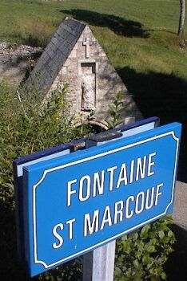

Acouo eune fais j'ai 'té sus ma bike dans la Grand' Tèrre. Chutte fais j'pédalis d'Chèrbourg à Carentan en vîsitant des lieux d'întéthêt par 'chîn et par là.
Jé dêv'thais êt' dé bouonne santé auprès toute l'exèrcice et sustout viyant qu'jé vîsitis deux fontaines dgéthisseuses.
Ieune d'ches fontaines-là 'tait la fontaine Saint Méen à Sainte-Méthe-Eglyise. Méen est p't êt' mus connu en Angliais souos san nom Celtique “Mewan” - i' 'tait un couôsîn à Saint Austell - et s'lon la légende Méen 'tait un parchonnyi à Saint Samson tch'l'accompangnît quand i' vîsitit Jèrri.
J'eus des problièmes en allant à Saint-Méthe-Églyise pa'ce qué j'eus un tyeur bosté sus ma bike. J'l'èrpathis - mais tchiques mètres pus liain par les p'tits c'mîns dé campangne - né v'là man tyeur erbosté. Enfîn auprès mes èrpathâtions, lé tyeur dé d'dans 'tait si raptiéchi qué j'dêcidis qu'n' valait pus la peine d'travailli dans l'solé à côté d'un russé et jé s'sais oblyigi d'pousser la bike jusqu'à Sainte-Méthe-Églyise. Heutheusement, j'y trouvis eune boutique où'est qu'j'acatis un nouvieau tyeur.
La fontaine Saint Méen s'trouve drièthe l'églyise (la cheinne auve lé bouonhomme dé parachutiste tchi pend du cliochi). Lé saint a la réputâtion d'dgéthi les maux d'pé et, viyant qu'san nom est prononcé “main”, des mous dé mains, pids, bras et gambes. Mais pouor dé mé, Saint Méen est achteu dgéthisseux dé bikes étout. Jé changis man tyeur bosté et j'lavis ma bike auve dé l'ieau d'la fontaine et né v'là la bike tchi va mus qu'janmais. Jé n'sis pon seux si l'saint a êlaîsi san travas - des mains ès pids, et des pids ès pédales - mais s'i' n'y'a pon d'saint patron pouor les bikes, j'm'en vais nominner Saint Méen.
Mais vraînment l'aut' fontaine 'tait pus împortante pouor mé. Saint Méen vînt d'Galles et vîsitit Jèrri auve Saint Samson, mais quand il arrivit dans la Grand' Tèrre il allit vaie Saint Marcou dans san monastéthe - lé même monastéthe dans tchi qu' Saint Hélyi arrivit. La légende dé Saint Hélyi qu'nou ouait duthant l'pélérînnage annuel au mais d'Juilet nos raconte qué Saint Hélyi rencontrit Saint Marcou à Nanteuil (ou en Latîn: Nantus). Mais si nou r'garde sus la carte dé Nouormandie nou n'vait pon d'Nanteuil. Mais si nou r'garde pas bein liain d'la côte Êst du Cotentîn, y'a des îles - les îles Saint-Marcou. Et en fache drièthe la grève d'Utah Beach, y'a un village mèrtchi sus la carte tch'a nom Saint-Marcou-dé l'île. En êffet, ch'est là la vielle ville dé Nanteuil. L'églyise dé Saint Marcou là est bâtie sus les fondâtions du monastéthe même du saint et tchi fut vîsité par les Saints Méen et Hélyi.

Et né v'chîn la deuxième fontaine dgéthisseuse qué j'vîsitis sus ma bike duthant mes vacanches.
La fontaine Saint Marcou s’trouve à chent mètres au Nord d’l’églyise à côté d’la grande route. Y’a acouo des gens tchi veinnent à seule fîn d’chèrchi eune dgéthithon d’lus ma, et aut’fais ch’tait sustout pouor dgéthi l’s êcrouelles - un ma tch’est connu coumme lé Mal au Rouai ou en Latîn: scrofula.
Duthant la dgèrre civile en Angliétèrre, lé Rouai Charles II fut procliâmé rouai dans l'Vièr Marchi quand i' tait en exil ichîn en Jèrri. Et y'a eune tchuthieuse connection auve Saint Marcou et san pouvé dgéthisseux.
Ch’est en tchi lé Rouai touchit des gens pouor les êcrouelles pouor la preunmié fais au mais d’Dézembre mil siêx chents quarante neu. Pus tard dans san règne auprès sa Restaurâtion en Angliétèrre, i’ soulait touchi les malades quâsiment toutes les s’maines, et nou-s’a caltchulé qu’en total i’ touchit pus d’nénante mille pèrsonnes. Mais coumme j’ai dit ch’fut en Jèrri tch’i’ pratitchit chutte vielle couôteunme pouor la preunmié fais auprès l’exétchution d’san péthe et sa procliamâtion. Et chenna pouor prouver qu’i’ tait vraînment rouai et approuvé par l’Bouan Dgieu en d’pit d’Cromwell et des républyitchains.
La cérémonie d’touchi pouor lé mal au Rouai avait don cèrtainement un aspet politique.
Mais dé ioù qu'ou veint, chutte crianche qué la touche des Rouais dgéthit l's êcroueulles? Eh bein dé Saint Marcou. I' n'y a pon d'tradition r'cordée dans les légendes pouor nos dithe si Marcou avait dgéthi autcheune pèrsonne duthant ses vîsites en Jèrri - i' nos est dit qu'il avait app'lée eune tempête pouor dêtrutithe les batchieux ès pithates, mais pas d'histouaithe dé dgéthithon.
Mais auprès sa mort, la tradition c'menchit à sa tombe au monastéthe dé Nanteuil, qu'les priéthes du saint avaient l'pouvé d'dgéthi l's êcrouelles. Tchiques années pus tard, ses r'liques fûtent transféthées à l'Abbaye dé Corbeny dans l'Êst du Rouoyaume dé France à tchiques kilomètres dé la ville dé Reims.
La coronâtion des Rouais d'France avaient lieu dans la cathédrale dé Reims et lé nouvieau rouai avait tréjous la couôteunme d'aller à Corbeny auprès la coronâtion et y dgéthi les malades. Ch'est l'pouvé du saint tch'avait 'té transféthé au rouai.
Les Rouais d'Angliétèrre èrcliâmaient ieux étout l'trône dé France et nou criyait qu'les rouais Angliais avaient l'pouvé dé Saint Marcou étout.
Quand L'Rouai Jacques VI d'Êcosse dévînt rouai d'Angliétèrre, et not' Duc, auprès la mort d'la Reine Lîzabé en mil siêx chents trais, i' n'avait pon vraînment l'goût pouor chutte couôteunme tch'i' considéthait supèrstitieuse, mais san fis Charles I et san p'tit fis Charles II faithaient sèrvi chutte couôteunme pouor renforchi lus înmage dé rouai divîn.
Et don nou peut vaie qu'lé pouvé d'dgéthi l's êcrouelles avait pâssé avaû les siècl'yes dé Saint Marcou tchi vîsitit Jèrri auve Saint Hélyi au sièxième siècl'ye, à Corbény, ès Rouais d'France, ès Rouais d'Angliétèrre et et d'Grande Brétangne, et èrvînt ichîn en Jèrri au dgiêx-septième siècl'ye.
Et né v'là un viage bein pus long qué j'éthais aimé faithe sus ma bike et chenna même auve la bénédiction d'St. Méen, dgéthisseux d'machinnes à pédales!
Geraint Jennings
Septembre 2002
Viyiz étout: